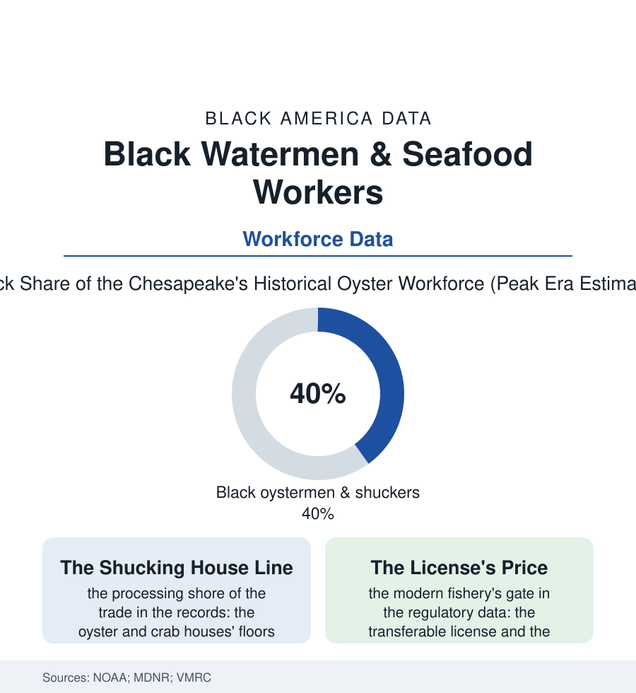

Black Employment
The Watermen: Black Oystermen, Crabbers, and Seafood Workers
The Chesapeake and the Gulf were worked for two centuries by Black watermen whose skill fed the nation's oyster houses — and whose industry the water itself is retiring. The watermen file.

Before the Chesapeake was a postcard it was a workplace — the largest oyster fishery on earth — and Black watermen were its backbone for two centuries: crewing the skipjacks, tonging the bars, captaining their own buyboats, and shucking in the great packing houses of Crisfield and the Gulf shore. The trade is dying of the water's own troubles now, and its workforce data have become an elegy with numbers. This article reads the watermen file.
The Water's Workforce
The historical record is unambiguous about the composition: from the colonial oyster commons forward, Black men worked the water in shares the surviving payrolls put at a third to a half of the fishery — enslaved watermen hired out by their owners (the hiring system's maritime chapter, the waterman's relative autonomy a documented peculiarity of the trade — a man who could handle a boat held a skill the market negotiated with), freedmen's fleets after emancipation (the Black-owned bugeyes and skipjacks in the registry records, the oyster-ground leases contested in the county courts, the captains whose names the vessel documentation preserves), and the processing shore's workforce — the shucking houses' floors, where Black women opened oysters and picked crab at piece rates in an industry whose seasons ruled the shore towns' whole economies (the labor data's classic portrait: the knife work's speed, the cuts and the cold, the company housing of the packing towns from Crisfield to Apalachicola). The Gulf's parallel file runs through the Biloxi and Louisiana fisheries — the shrimp and oyster fleets, the canneries' Black and immigrant lines — the seafood-processing workforce of the Gulf data remaining, into the modern era, among the most Black and brown industrial workforces in the food economy. The dangers were the maritime standard written in the coast's churchyards: the drownings of the tonging skiffs, the oyster wars' violence in the nineteenth-century record (the pirates and the patrols — the fishery's lawlessness a matter of state navies), the freeze and the storm seasons' toll in the watermen's memorials.
The Retirement of the Water
What ended the trade was not the workforce but the resource: the Chesapeake's oyster collapse (disease, overharvest, and the bay's nutrient burden reducing the harvest to a percent or two of its historical tonnage in the fisheries data — the most complete industrial-ecological collapse in the American record), the Gulf's own successions of spill and storm, and the regulatory reconstruction that followed (the limited-entry licenses, the sanctuaries, the aquaculture transition — the leased bottom and the cage farms of the new oyster economy, whose capital requirements the licensing data convert into an ownership filter the heritage watermen meet from outside). The workforce that remains is counted in the low thousands where the fleets once ran to the tens of thousands — older in the license data with every renewal cycle, its Black share carried in the family operations (the son fishing the father's license, the shucking houses consolidated to the coasts' few survivors, the crab-picking increasingly done, in the modern plants' labor data, by the guest-worker visas of the current seafood economy — the shore's workforce succession completing itself in a generation). The heritage economy has arrived as the trade's afterlife in the familiar pattern: the maritime museums' skipjack fleets crewed by the retired, the watermen's associations preserving the buyboat registries, the oyster roasts of the church calendar serving a luxury product where the workingman's protein used to be — the oyster's price arc in the restaurant data the whole file in a single number. What the water taught — the reading of tide and bottom, the two centuries of craft — retires with the license holders, unrecorded except in the oral-history archives the universities raced to fill in the trade's last decades.
Reading the Watermen Data
The watermen file is the employment section's tide line: an industry that fed the nation from Black hands and Black boats, retired by the water's own exhaustion within a single lifetime's memory. NOAA counts the landings. The registries of the old buyboats — and the grandfathers who can still name every bar in the bay — count the rest, in a units no survey prints.
More in Black Employment
The Black Unemployment Rate: The Two-to-One Pattern
Black unemployment runs at roughly twice the White rate — 5.5 percent against 3.3 percent in annual averages — a ratio stable across five decades of federal data. How it is measured and why it persists.
Black Median Weekly Earnings: The 80-Cent Ratio
Black full-time workers earn a median of about $900 a week — roughly 80 cents for every dollar White workers earn. The BLS earnings data by group, gender, and occupation.
Black Labor Force Participation: Working at National Rates
Black labor force participation runs at roughly the national rate — and Black women participate at higher rates than White women. The BLS participation data.
Source: National Oceanic and Atmospheric Administration fisheries data; U.S. Bureau of Labor Statistics; Maryland and Virginia marine resources records; Smithsonian maritime collections.